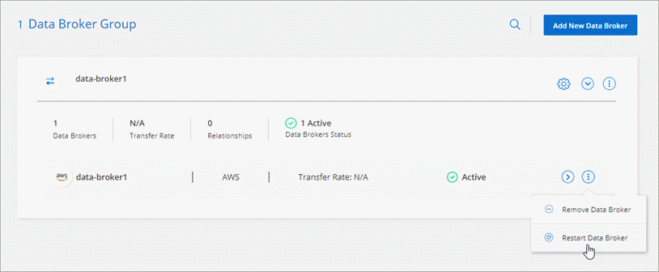

要求變更文件
要求變更文件 編輯此頁面
編輯此頁面 瞭解如何作出貢獻
瞭解如何作出貢獻更新功能Cloud Sync
瞭Cloud Sync 解更新功能。
2022年7月3日
支援Azure Data Lake Storage Gen2
您現在可以將NFS伺服器或SMB伺服器的資料同步至Azure Data Lake Storage Gen2。
建立包含Azure Data Lake的同步關係時、您需要提供Cloud Sync 含有儲存帳戶連線字串的功能。它必須是一般連線字串、而非共用存取簽章（SAS）。
從Google Cloud Storage持續同步
持續同步設定現在可從來源Google Cloud Storage儲存庫支援至雲端儲存目標。
初始資料同步之後Cloud Sync 、Syncset會偵聽來源Google Cloud Storage儲存區的變更、並在目標發生時持續同步任何變更。此設定適用於從Google Cloud Storage儲存庫同步至S3、Google Cloud Storage、Azure Blob儲存設備、StorageGRID 不支援或IBM Storage的情況。
與您的資料代理人相關聯的服務帳戶需要下列權限才能使用此設定：
- pubsub.subscriptions.consume
- pubsub.subscriptions.create
- pubsub.subscriptions.delete
- pubsub.subscriptions.list
- pubsub.topics.attachSubscription
- pubsub.topics.create
- pubsub.topics.delete
- pubsub.topics.list
- pubsub.topics.setIamPolicy
- storage.buckets.update新的Google Cloud區域支援
下列Google Cloud地區現在支援此功能：Cloud Sync
-
哥倫布（美國東部5）
-
達拉斯（美國-南1）
-
馬德里（歐洲-西南1）
-
米蘭（歐洲-西8）
-
巴黎（歐洲-西9）
全新Google Cloud機器類型
Google Cloud中資料代理程式的預設機器類型現在是n2-Standard-4。
2022年6月6日
持續同步
新設定可讓您持續將來源S3儲存區的變更同步至目標。
初始資料同步之後Cloud Sync 、Syncset會偵聽來源S3儲存區的變更、並在目標發生時持續同步任何變更。不需要以排定的時間間隔重新掃描來源。此設定僅適用於從S3儲存區同步至S3、Google Cloud Storage、Azure Blob儲存設備、StorageGRID 不支援或IBM Storage的情況。
請注意、與您的資料代理人相關聯的IAM角色需要下列權限才能使用此設定：
"s3:GetBucketNotification",
"s3:PutBucketNotification"這些權限會自動新增至您所建立的任何新資料代理人。
顯示所有ONTAP 的資料
當您建立同步關係時Cloud Sync 、目前的功能就是在來源Cloud Volumes ONTAP 的支援系統上顯示所有Volume、內部部署ONTAP 的支援服務、或是在支援ONTAP 該功能的FSX檔案系統上顯示所有Volume。
先前Cloud Sync 、僅顯示符合所選傳輸協定的磁碟區。現在所有的磁碟區都會顯示、但不符合所選傳輸協定或沒有共用區或匯出的任何磁碟區都會呈現灰色、而且無法選取。
將標記複製到Azure Blob
當您建立以Azure Blob為目標的同步關係時Cloud Sync 、現在可讓您將標記複製到Azure Blob容器：
-
在*設定*頁面上、您可以使用*複製物件*設定、將標記從來源複製到Azure Blob容器。這是複製中繼資料的附加功能。
-
在「標記/中繼資料」頁面上、您可以指定要在複製到Azure Blob容器的物件上設定的Blob索引標籤。先前只能指定關係中繼資料。
當Azure Blob為目標、且來源為Azure Blob或S3相容端點（S3、StorageGRID 候選或IBM Cloud Object Storage）時、便支援這些選項。
2022年5月1日
通知
現在有一項新的*通知*設定可供同步關係使用。此設定可讓您選擇是否要在Cloud Sync Cloud Manager的通知中心接收功能不全的通知。您可以啟用通知、以便成功同步資料、同步失敗資料及取消資料同步。

2022年4月3日
資料代理群組增強功能
我們對資料代理商群組進行了多項增強：
-
您現在可以將資料代理程式移至新的或現有的群組。
-
您現在可以更新資料代理程式的Proxy組態。
-
最後、您也可以刪除資料代理人群組。
儀表板篩選器
您現在可以篩選「同步儀表板」的內容、更輕鬆地找到符合特定狀態的同步關係。例如、您可以篩選狀態為「失敗」的同步關係

2022年3月3日
在儀表板中排序
您現在可以依照同步關係名稱來排序儀表板。

資料感測整合的增強功能
在先前的版本中、我們推出Cloud Sync 了與Cloud Data Sense整合的功能。在此更新中、我們透過更輕鬆地建立同步關係來強化整合。從Cloud Data Sense啟動資料同步之後、所有來源資訊都會包含在單一步驟中、而且只需要輸入一些重要詳細資料即可。

2022年2月6日
資料代理群組的增強功能
我們強調資料代理商_群組_、改變了您與資料代理人的互動方式。
例如、當您建立新的同步關係時、請選取要與關係搭配使用的資料代理_群組_、而非特定的資料代理程式。

在*管理資料代理人*索引標籤中、我們也會顯示資料代理人群組正在管理的同步關係數目。

2022年1月2日
關係名稱
您現在可以為每個同步關係提供有意義的名稱、以便更輕鬆地識別每個關係的目的。您可以在建立關聯時新增名稱、也可以在之後的任何時間新增。

S3私有連結
當您在Amazon S3之間或從Amazon S3同步資料時、可以選擇是否使用S3私有連結。當資料代理人將資料從來源複製到目標時、便會透過私有連結。
請注意、與您的資料代理人相關聯的IAM角色需要下列權限才能使用此功能：
"ec2:DescribeVpcEndpoints"此權限會自動新增至您所建立的任何新資料代理人。
Glacier即時擷取
現在、當Amazon S3成為同步關係的目標時、您可以選擇_Glacier即時擷取_儲存類別。
從物件儲存到SMB共用的ACL
目前支援將ACL從物件儲存設備複製到SMB共用區。Cloud Sync之前、我們只支援將ACL從SMB共用區複製到物件儲存區。
SFTP至S3
使用者介面現在支援從SFTP建立與Amazon S3的同步關係。此同步關係先前僅受到API支援。
表格檢視增強功能
我們重新設計儀表板上的表格檢視、以方便使用。如果您按一下*更多資訊*、Cloud Sync 則此功能會篩選儀表板、以顯示有關該特定關係的更多資訊。

支援Jarkarta地區
目前支援在AWS亞太地區（雅加達）部署資料代理商。Cloud Sync
2021年11月28日
從SMB到物件儲存的ACL
現在、當從來源SMB共用區設定同步關係到物件儲存（除了不包括S3）時、即可複製存取控制清單（ACL）Cloud Sync ONTAP 。
不支援將ACL從物件儲存區複製到SMB共用區。Cloud Sync
2021年10月31日
2021年10月4日
2021年9月2日
支援FSX for ONTAP Sf
您現在可以將資料同步至Amazon FSX for ONTAP Sfor Sfor系統、或從Amazon FSX同步資料。
2021年8月1日
更新認證資料
利用目前的支援功能、您可以在現有的同步關係中、以來源或目標的最新認證來更新資料代理程式。Cloud Sync
如果您的安全性原則要求您定期更新認證資料、這項增強功能將有助於您。 "瞭解如何更新認證資料"。

物件儲存目標的標記
建立同步關係時、您現在可以在同步關係中將標記新增至物件儲存目標。
Amazon S3、Azure Blob、Google Cloud Storage、IBM Cloud Object Storage及StorageGRID 支援新增標記。

支援Box
支援的支援Cloud Sync "方塊" 當使用此解決方案時、可作為與Amazon S3、StorageGRID Syn性質 及IBM Cloud Object Storage的同步關係來源Cloud Sync 。
Google Cloud資料代理商的公有IP
在Google Cloud中部署資料代理程式時、您現在可以選擇啟用或停用虛擬機器執行個體的公有IP位址。
雙傳輸協定Volume Azure NetApp Files 、提供更多功能
當您選擇Azure NetApp Files 來源或目標Volume進行更新時、Cloud Sync 無論您選擇哪種傳輸協定來進行同步關係、現在只要顯示雙傳輸協定Volume即可。
2021年7月7日
S3儲存設備與Google Cloud Storage ONTAP
現在、支援從使用者介面同步處理S3儲存設備與Google Cloud Storage儲存桶之間的關係。Cloud Sync ONTAP
支援HashiCorp資料錯誤
您現在可以設定資料代理程式、透過Google Cloud服務帳戶驗證、從外部HashiCorp Vault存取認證資料。
定義S3儲存區的標記或中繼資料
設定Amazon S3儲存區的同步關係時、同步關係精靈現在可讓您定義要儲存在目標S3儲存區物件上的標記或中繼資料。
標記選項先前是同步關係設定的一部分。
2021年6月7日
Google Cloud的儲存課程
當Google Cloud Storage資源桶成為同步關係的目標時、您現在可以選擇想要使用的儲存類別。支援下列儲存類別：Cloud Sync
-
標準
-
近線
-
冷線
-
歸檔
2021年5月2日
比較屬性
現在每個同步關係都有一個新的*比較依據*設定可供使用。
這項進階設定可讓您選擇Cloud Sync 在判斷檔案或目錄是否已變更且應重新同步時、是否應比較某些屬性。
2021年4月11日
獨立Cloud Sync 式的版不使用此服務
獨立Cloud Sync 式的不再使用此功能。您現在應該Cloud Sync 直接從Cloud Manager存取、因為Cloud Manager具備所有相同的功能。
登入Cloud Manager之後、您可以切換至頂端的「Sync」（同步）索引標籤、檢視您的關係、就像以往一樣。
Google Cloud Storage與S3之間的中繼資料
目前、支援在Google Cloud Storage和S3供應商（AWS S3、支援、IBM Cloud Object Storage）之間複製中繼資料。Cloud Sync StorageGRID
重新啟動資料代理人
您現在可以從Cloud Sync 功能不再需要的地方重新啟動資料代理程式。

未執行最新版本時的訊息
目前可識別資料代理程式何時未執行最新的軟體版本。Cloud Sync此訊息有助於確保您獲得最新的功能。